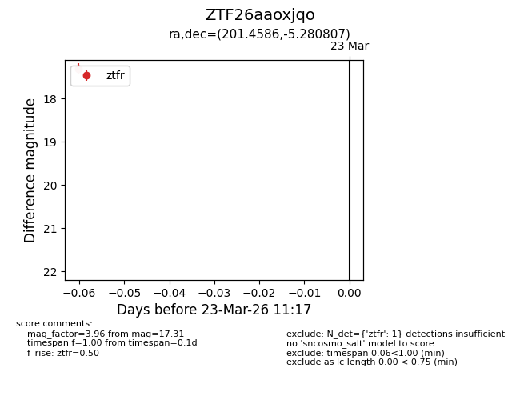
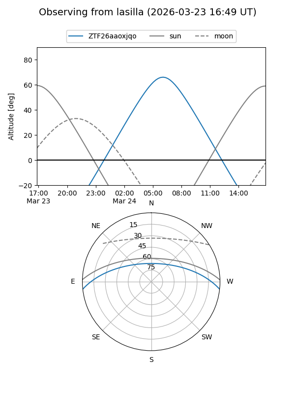
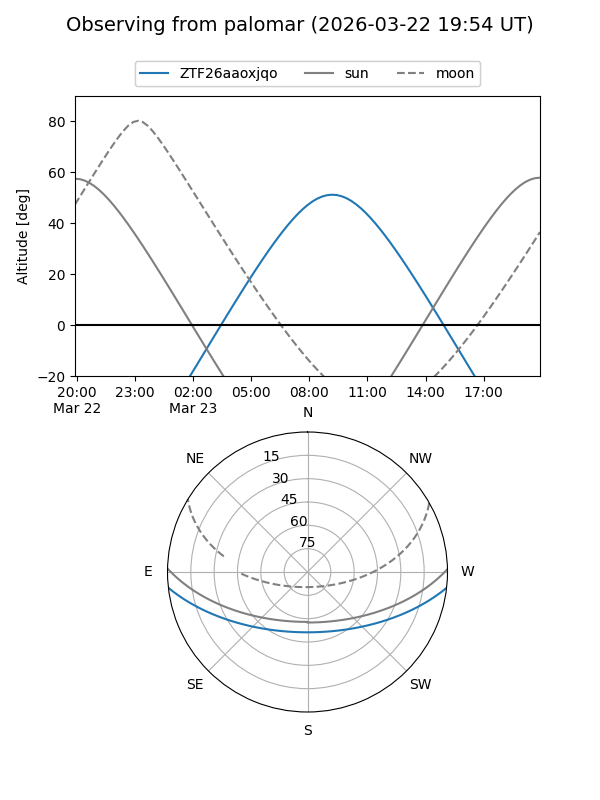

ZTF26aaoxjqo
Target ZTF26aaoxjqo at 2026-03-23 11:19
Aliases and brokers:
FINK: link
Lasair: link
ALeRCE: link
alt names
ZTF26aaoxjqo (ztf,fink_ztf)
Coordinates:
equatorial (ra, dec) = 201.4586,-5.28081
equatorial (HMS+DMS) = 13:25:50.06,-05:16:50.91
galactic (l, b) = (318.5987,+56.54105)
Flags:
Photometry:
last ztfr=17.31
1 ztfr detections
Lightcurve

Visibility


Additional plots